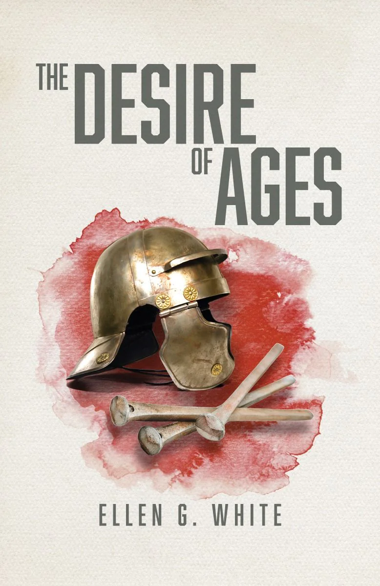
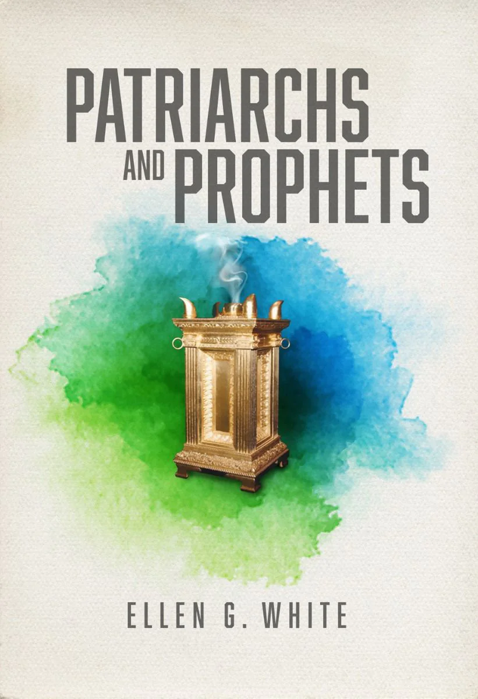
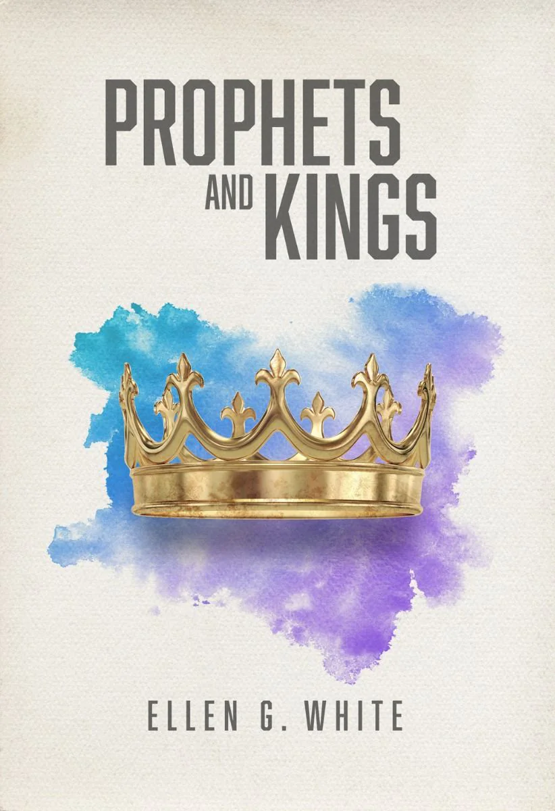
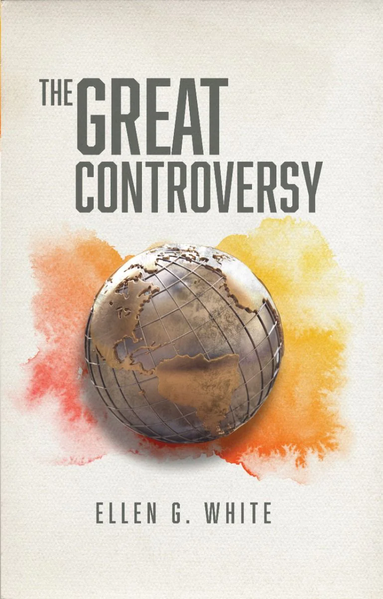
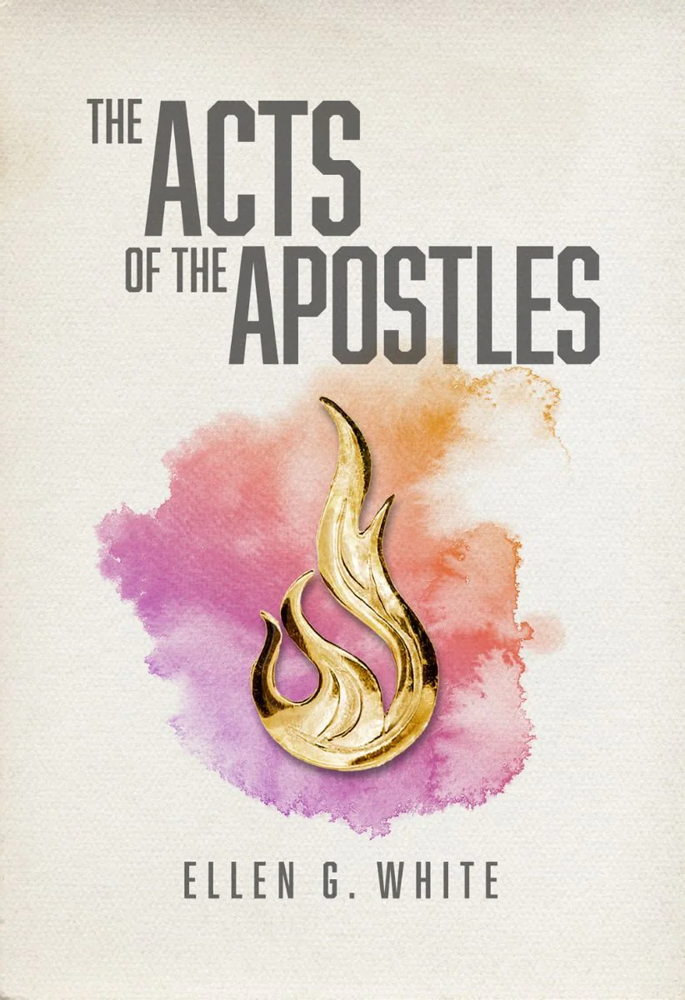
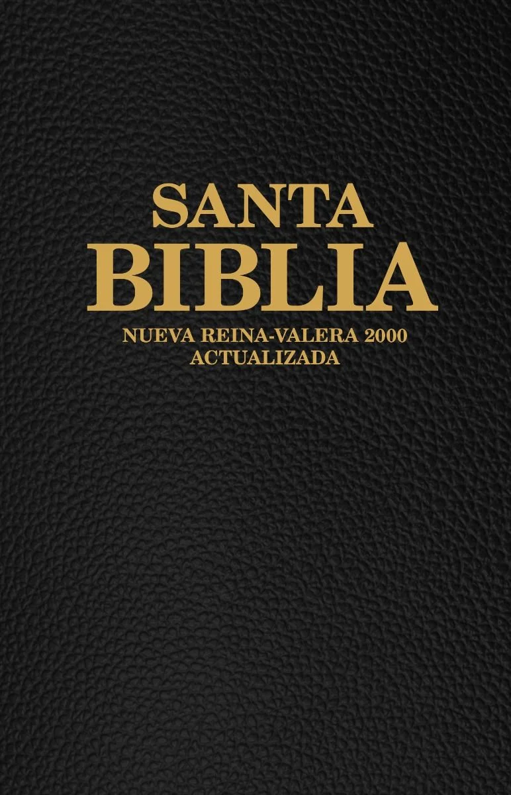
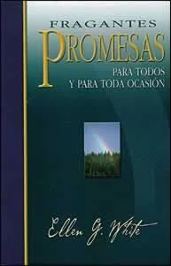
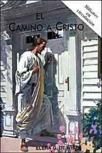
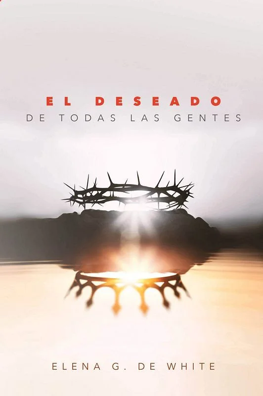

Free Christian Books
Choose a book below and fill out the form to receive it for free!
NKJV Gift Bible with Finley Helps (Black)
The New King James Version includes a presentation page, words of Christ in red, and revised Finley study helps. Size: 5 ½" x 8".
NKJV Gift Bible with Finley Helps (Burgundy)
New King James Version, includes presentation page, words of Christ in red, and revised Finley study helps. Size: 5 ½" x 8".

The Desire of Ages
This devotional classic by Ellen White tells the life story of the greatest spiritual leader the world has ever known--Jesus Christ. In these pages, you will understand the true, underlying significance of Christ's deeds and their bearing on your own life.

Patriarchs and Prophets
The splendid panorama of patriarchal life, God’s dramatic dealings with Israel, the division of Canaan, and the setting up of the kingdom under David are all told with persuasive power.

Prophets and Kings
New in the Happiness Digest Series designed for sharing is the second volume of Ellen White's Conflict of the Ages series. Picking up where Patriarchs and Prophets left off, Prophets and Kings takes you through the tumultuous years of Israel's kings, the split with the tribes of Judah, and the ensuing years of Babylonian captivity. Now you can share these stories and their timeless truths with family and friends.

The Great Controversy
The Great Controversy gives a startling overview of the mighty conflict between Christ and Satan from its origins in heaven thousands of years ago to its conclusion on earth in the days just ahead of us. This still-timely book reveals how God will ultimately rid the universe of evil and make all things new.

The Acts of the Apostles
Describes the early Christian church, the work of the apostles, and the spread of the gospel after Christ’s ascension.
Steps to Christ - Friendship Edition
Discover the steps to finding a forever friendship with Jesus. Jesus is the Friend of all, and this friendship Edition validates that message visually as well as in the words of this inspirational best seller.

Santa Biblia Nueva-Reina Valera 2000
This Bible is excellent for use in evangelistic campaigns. It is hard cover and black. Includes text references, the Faith of Jesus Bible study, Biblical chronology, and a special section on divine promises.
Esta Biblia es excelente para su uso en campañas evangelísticas. Es de tapa dura y color negro. Incluye referencias de texto, el estudio bíblico La fe de Jesús, cronología bíblica y una sección especial de promesas divinas.
El Camino a Cristo
Millones de personas han conocido a Jesús por primera vez a través de este libro y muchos han crecido en una relación de fe con él, no importa cuánto tiempo hayan disfrutado de la vida cristiana.
Esta edición de amistad de El camino a Cristo revela Jesús como Salvador del mundo por medio de una ilustración para la portada que refleja sensibilidad cultural y es hermosamente presentada.
En apenas trece cortos capítulos, usted descubrirá los pasos para encontrar una amistad con Jesús para la eternidad. Usted leerá acerca de su amor por usted, el arrepentimiento, la fe y la aceptación, el crecimiento espiritual, el privilegio de la oración, qué hacer con la duda, y cómo vivir una vida de regocijo con su mejor Amigo Jesús.

Fragantes promesas: Para todos y toda ocasión
Este libro nos recuerda las maravillosas promesas que Dios nos da en las cuales podemos encontrar consuelo, gozo y esperanza.
Historia de esperanza
¿Cómo llegó el mundo a una condición tan deteriorada? ¿Por qué hay tanto sufrimiento? ¿De dónfde viene el mal? ¿Alguna vez el mal desaparecerá? Preguntas como estas perturban a muchas personas pensantes. La ciencia no tiene respuesta, y la filosofía tiene respuestas muy conflictivas. ¿Dónde podemos encontrar la verdad?
La Biblia ofrece información y soluciones que han superado la prueba del tiempo. Sobre sólido fundamento bíblico, Historia de esperanza ofrece una vislumbre de la verdad detrás del escenario de la historia. Revela el origen del mal, cómo Dios lidió con él en el pasado, y el plan divino para resolver pronto el conflicto planteado por la presencia del mal en el mundo.

Eventos de los últimos días
Jesús no sólo nos dejó su hermosa promesa: "Vendré otra vez", sino que además nos enseñó cómo estar listos para recibirle en paz. Este libro forma parte de sus instrucciones. En forma clara e impresionante nos explica que estamos en los últimos días de la historia de esta Tierra. También se exponen temas básicos como el zarandeo, la lluvia tardía, el sello de Dios y la marca de la bestia, el fin del tiempo de gracia, las siete últimas plagas y el regreso de Cristo. Eventos de los últimos días es de un valor inestimable para todos los que quieran prepararse para encontrarse con el Rey de reyes.

El camino a Cristo (Edición de bolsillo)
Millones de personas han conocido a Jesús por primera vez a través de este libro y muchos han crecido en una relación de fe con él, no importa cuánto tiempo hayan disfrutado de la vida cristiana.
En apenas trece cortos capítulos, usted descubrirá los pasos para encontrar una amistad con Jesús para la eternidad. Usted leerá acerca de su amor por usted, el arrepentimiento, la fe y la aceptación, el crecimiento espiritual, el privilegio de la oración, qué hacer con la duda, y cómo vivir una vida de regocijo con su mejor amigo Jesús.

El Deseado de Todas las Gentes
Una nueva y gloriosa luz resplandece en muchos pasajes conocidos de las Escrituras. Sigue a Jesús a través de estas páginas, desde su nacimiento en el establo de Belén hasta su muerte en la cruz, su gloriosa resurrección y su triunfante regreso al cielo.